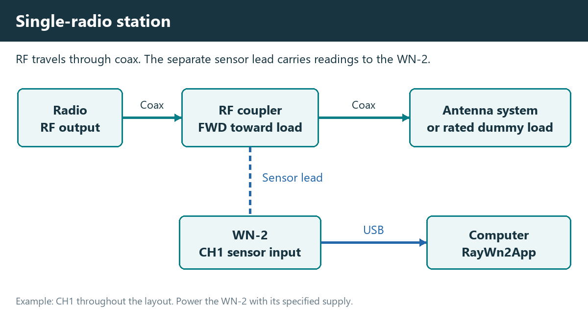
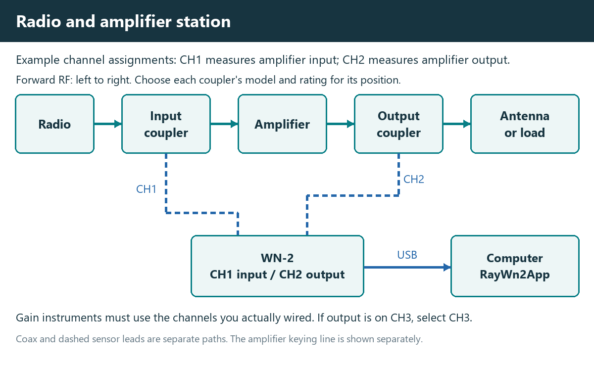
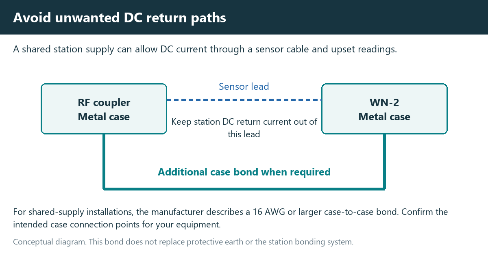
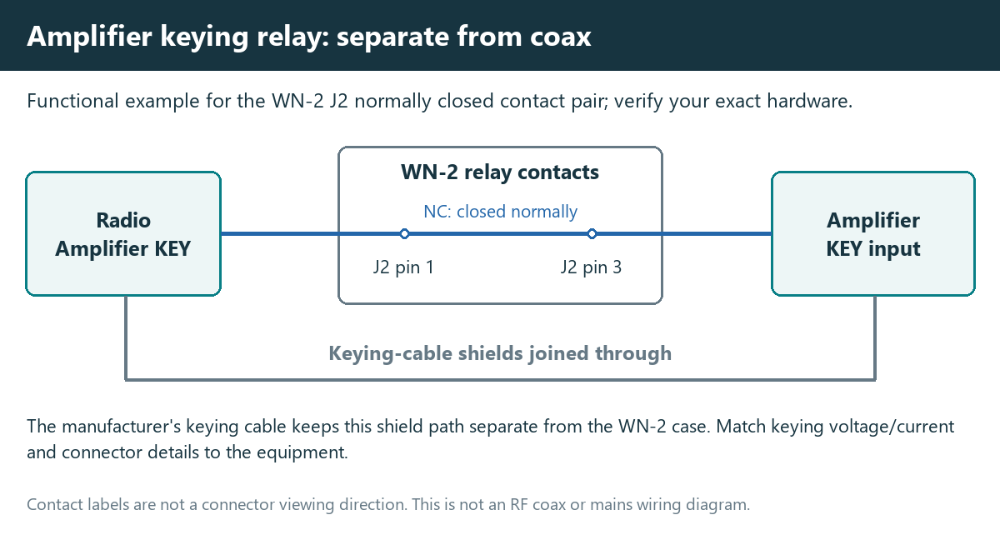

Preparing your WN-2 station
Start with the physical signal path, then make the instruments match it. RayWn2App can show several couplers and WN-2 devices in one layout, but it cannot identify which coax or sensor lead you connected. The diagrams below are functional examples, not connector assembly drawings.
On this page
- Before connecting
- Single-radio wiring
- Radio and amplifier wiring
- Power supplies and grounding
- USB and RF interference
- Amplifier keying and protection
- Auxiliary connections
- Calibration and reference matching
- First-use checks
- Readings and control confirmation
Before connecting
- Stop transmitting and place the amplifier in standby. Switch off equipment as required before changing coax, power, sensor or control wiring.
- Check each coupler's exact model, frequency range, power rating and connector labels. Use suitable coax, connectors and a properly rated antenna system or dummy load. A larger dashboard or LCD range does not increase the coupler's rating.
- Follow the coupler's forward-direction marking from transmitter toward antenna/load. Reversing it can interchange forward and reflected readings.
- Keep the RF coax path separate from the sensor leads, USB cable and amplifier keying line. Do not put RF into a sensor or auxiliary connector.
- Use the specified WN-2 power supply and correct polarity. Do not assume every station supply or accessory shares compatible grounding or voltage limits.
Single-radio wiring
Place the coupler in the coax path between the radio and antenna system or dummy load. Connect its sensor lead to a WN-2 sensor input. The example uses CH1; another channel is equally usable when its software settings and instruments match.

Solid teal arrows are the RF coax path. The dashed blue lead carries sensor readings. USB connects the WN-2 and computer. Select image to enlarge.

- Connect and power the WN-2, install its platform driver if required, then follow First station connection.
- Open Device → Settings → RF couplers. Select the correct WN-2, channel and coupler model. Leave Send this device’s coupler families to the connected WN-2 on OK checked when applying the setup.
- Load the Single Radio station layout, or use Layout → Bind instruments to device… on your existing layout. Set individual instrument channels to the input actually used.
A tuner or antenna switch may also be in your station. SWR describes conditions at the coupler's position in that RF path. Measurements on opposite sides of a tuner can differ without either meter being faulty.
Radio and amplifier wiring
Use an input coupler between the radio and amplifier, and an output coupler between the amplifier and antenna system/load. Choose each model for the frequency and power at its own location. An input coupler's rating does not qualify it for amplifier output power.

The supplied amplifier layout uses CH1 for input and CH2 for output. Your wiring can use different channels. Select image to enlarge.

In each instrument's Properties, choose the device and channel it measures. For Amplifier Gain, check both input and output assignments. If your output coupler is on CH3, set the output instruments and gain output channel to CH3. Bulk device binding preserves channel numbers; it does not discover or change your wiring. See binding and amplifier gain.
Power supplies and grounding
The sensor lead carries small analog signals. Unwanted DC return current through that lead can create a case-to-case voltage difference and make power or SWR read too high. Check the installation before changing calibration to compensate for an unexpected reading.
The manufacturer recommends its supplied power adapter to reduce unwanted station DC return paths. If you power the meter from a shared central supply, review its grounding arrangement. WaveNode describes an additional 16 AWG or larger bond between sensor case and control-box case where needed to reduce their DC potential difference. Use the intended connection points for your equipment; power down before arranging the wiring.

The additional bond addresses the sensor/control-box DC reference. It is not a replacement for protective earth or a complete station grounding design. Select image to enlarge.

Keep protective earth intact. Do not remove a mains safety ground or use the sensor cable as a power-return conductor. Station bonding, lightning protection and mains safety require arrangements appropriate to the actual installation. Do not assume adding a software zero offset or reference curve repairs a wiring problem.
USB and RF interference
Use a known USB data cable, preferably the supplied ferrite-equipped cable. Route it and sensor/control leads away from high-RF wiring where practical. A direct computer USB port is a useful first test when a hub or combined card-reader port behaves poorly.
| Symptom | Useful checks |
|---|---|
| USB reconnect sounds or stale data when transmitting | Check RF pickup, cable routing, ferrites, meter power and the USB port. Return to receive before moving cables. A different software power calculation will not repair the USB link. |
| Unexpected readings after changing a shared DC supply or station wiring | Review the DC return and case bonding before adjusting calibration. Check the correct coupler model and channel. |
| Device busy even with no other app visible | A Station Host service may own the meter. Use Remote Client, or deliberately stop the service before local USB use. |
| Receiver noise appears with an accessory or supply | Compare with the accessory switched off while receiving, then check supply suitability, routing and common-mode suppression. Do not defeat protective earth to remove noise. |
For driver, discovery and connection checks, see connection troubleshooting. Correct the physical cause rather than relying on repeated software recovery during transmission.
Amplifier keying and protection
The amplifier keying line is a control circuit, separate from the coax carrying RF. A compatible installation can place the WN-2's normally closed protection contacts in series with the keying conductor. Confirm the amplifier's keying voltage/current and the exact meter relay ratings before connecting it; use a suitable interface if they are not compatible.

For the documented WN-2 J2 connector, the outer pins 1 and 3 are the NC pair. This functional drawing does not define connector viewing orientation. Select image to enlarge.

The manufacturer's keying accessory joins the cable shields through without bonding them to the WN-2 enclosure, helping avoid an unintended station DC path. Verify your cable against the exact connector identification; do not apply these details to another model or connector by resemblance.
Normal untripped NC closure has been physically checked with an ohmmeter. That verifies the contacts at the time measured, not continuous contact-position feedback. The app reports the SWR protection latch and command status; it does not independently monitor relay contacts or prove that amplifier keying is inhibited. Other equipment-specific relay functions can also matter. Check the installed protection path directly before relying on it.
Select the intended protected channel and threshold using SWR Protection. The protected channel must correspond to the RF point you intend to protect. Connecting a keying cable alone does not establish correct protection settings. The software Overdrive Warning is advisory and does not itself interrupt keying. A USB disconnect or closed application is not a guaranteed amplifier inhibit. Test the installation with an appropriate controlled procedure before normal operation.
Auxiliary connections
- RF sensor leads: use the proper matching sensor connectors. The coupler's sensor outputs are not a general accessory power input. Do not inject supply voltage into them.
- Analog/DC: use the sensor interface, voltage scaling or current-sensing arrangement specified for that input. Station supply current is not measured merely by powering the WN-2. Do not connect mains or an arbitrary station voltage directly to an analog input. See DC and analog inputs.
- Temperature: verify sensor type, package pinout and connector orientation before wiring. See LM35/LM34 setup.
- Digital outputs: use a compatible external driver. Never drive relay coils directly from WN-2 logic outputs. Plan independent safe behavior if communication is lost. See Digital I/O.
- Antenna switches: verify the external controller's truth table and polarity. Do not assign the same output bits to conflicting accessories. Stop transmitting before switching; software low-RF checks do not replace hardware inhibit or sequencing. See Antenna Switch.
Calibration and reference matching
RF couplers are factory calibrated and do not require additional calibration for normal use. Begin with the correct model and sound wiring. Opening the coupler or adjusting its internal hardware is not a RayWn2App setup step.
| Choice | What it changes |
|---|---|
| Coupler model and WN-2 hardware family | Match the installed sensor. Software conversion and the hardware family have distinct roles; Settings OK and Connect can send saved families. See coupler settings. |
| Measurement processing | Selects software power/average/SWR calculations. It does not recalibrate the physical coupler, change the WN-2 LCD algorithm or set hardware protection. See processing presets. |
| User reference matching | Optionally matches application readings to your chosen reference for that device, channel, model and direction. It preserves the factory hardware and does not change standalone LCD readings or protection. See reference matching. |
| Meter range, colors and peak hold | Change presentation. They do not increase ratings or establish measurement accuracy. |
If comparing with another meter, use a suitable known load, stable signal and the same power statistic: average with average or peak with peak. Account for meter placement, coax losses and modulation. A radio's drive percentage is not itself a calibrated watt reference. For accuracy checks, use an appropriate reference meter and record its reading.
Reference matching supports separate forward/reflected points and a preview. Use an independent check point that was not fitted to the curve. Do not create excessive reflected power just to obtain calibration points. If readings remain unexplained after checking setup, contact the equipment manufacturer before adjusting coupler hardware.
First-use checks
- With RF off, record which coupler/model is on each WN-2 channel. Check coax direction, sensor leads, specified supply and USB driver.
- Connect the correct serial number. Check the channel models and hardware families in Settings, then bind your layout to that device. Live/healthy describes the data link.
- Check idle readings. Small residual watts and Low RF/Unavailable SWR can be normal; unconnected auxiliary inputs do not represent installed sensors.
- If you choose to transmit, use your normal controlled station procedure and a suitable rated load. Start within the equipment's safe operating limits. Verify readings appear on the expected channels; stop if anything is unexpected. RayWn2App does not key the transmitter for this check.
- For an amplifier, confirm both gain channels and independently check any keying/protection wiring. Do not assume a healthy link proves the protection path works.
- Save the layout and note the device serial, couplers, channels and any optional reference settings for future troubleshooting.
Readings and control confirmation
A successful USB write is not proof that an external relay moved, an antenna changed or settings were saved in the meter's standalone memory. Live telemetry is not a continuous physical-contact test. Treat stale or unavailable readings as unknown, rather than zero or a safe-load indication. Keep software settings, hardware commands and independent physical checks distinct.
Manufacturer installation information
WaveNode's public technical documents include sensor interfaces (#101), amplifier keying (#119), RF interference (#120) and sensor grounding/calibration (#123). Use the instructions and ratings for your actual equipment. The diagrams here are original RF StateSide illustrations; no manufacturer firmware, source code or confidential reference files are included in Help.
Help home · RF StateSide · RayWn2App operator guide